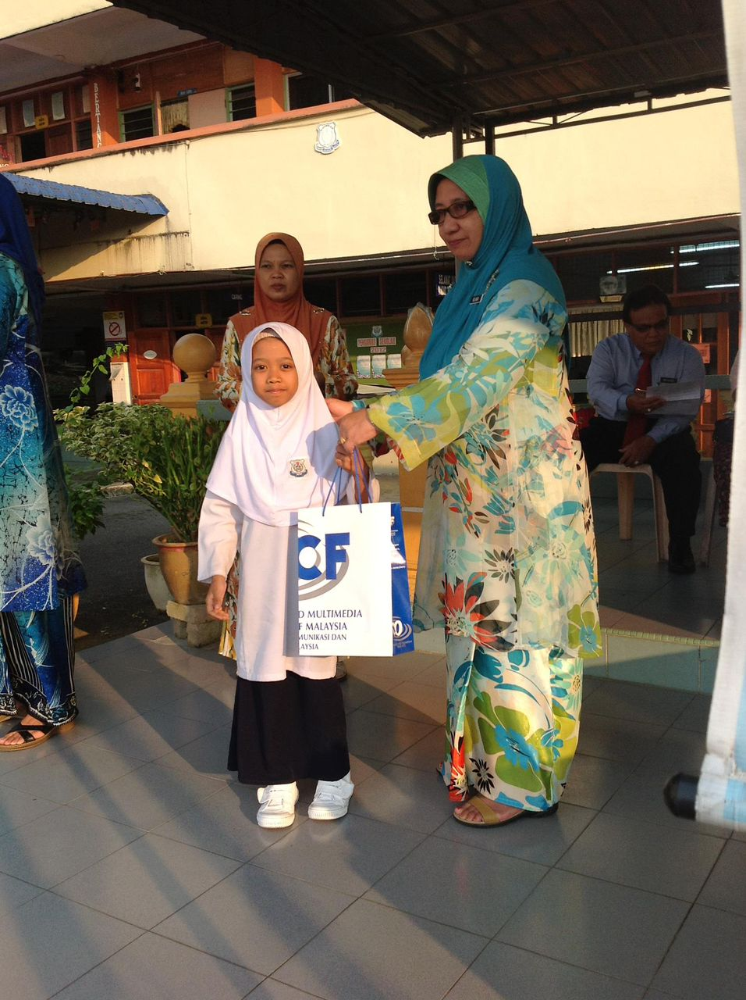
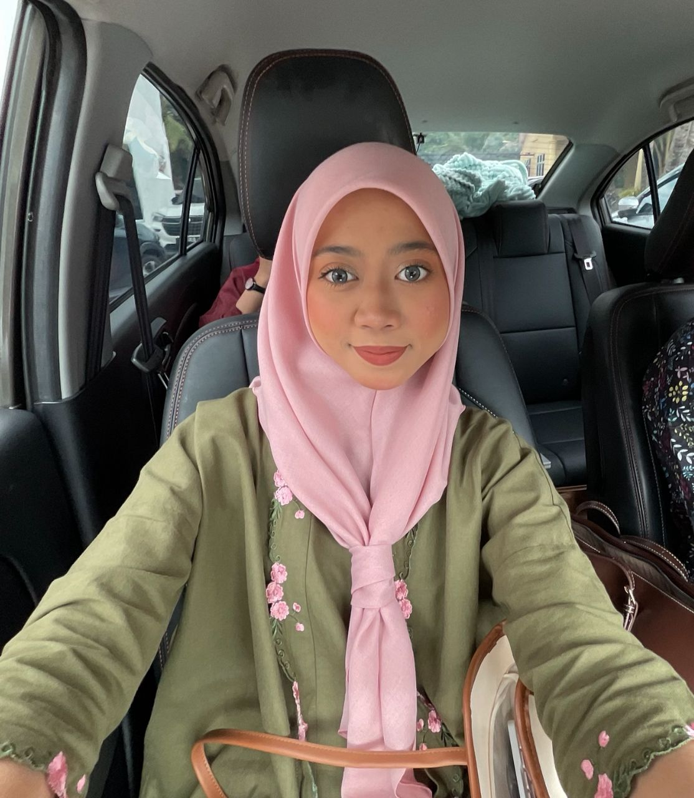

SK KAMPUNG GELAM
"Click to watch memories"During my primary school years, I proudly served as a school prefect for four consecutive years. I enjoyed being involved in school performances and loved being on stage. Academically, I achieved excellent results in UPSR with 5A and 1B—though science wasn’t my favourite subject, I still worked hard and gave my best.

SMK KLEBANG BESAR
 "Click to watch memories"
"Click to watch memories"
In secondary school, I continued my leadership journey as a koperasi prefect and later became the Head Prefect of Koperasi. Even though science was never my favourite, I somehow ended up in the Science Technical stream (still questioning that decision 😂). I finished my SPM with 5A, 2B, and 2C — and yes, the C’s were definitely from science subjects!
UITM SEGAMAT
 "Click to watch memories"In university, I pursued a Diploma in Information Science—something completely unexpected compared to my original goals. Even though it wasn’t my first choice, I’m grateful for the journey because it gave me amazing friends, new experiences, and valuable knowledge. Throughout my studies, I worked hard and proudly achieved Dean’s List every semester.